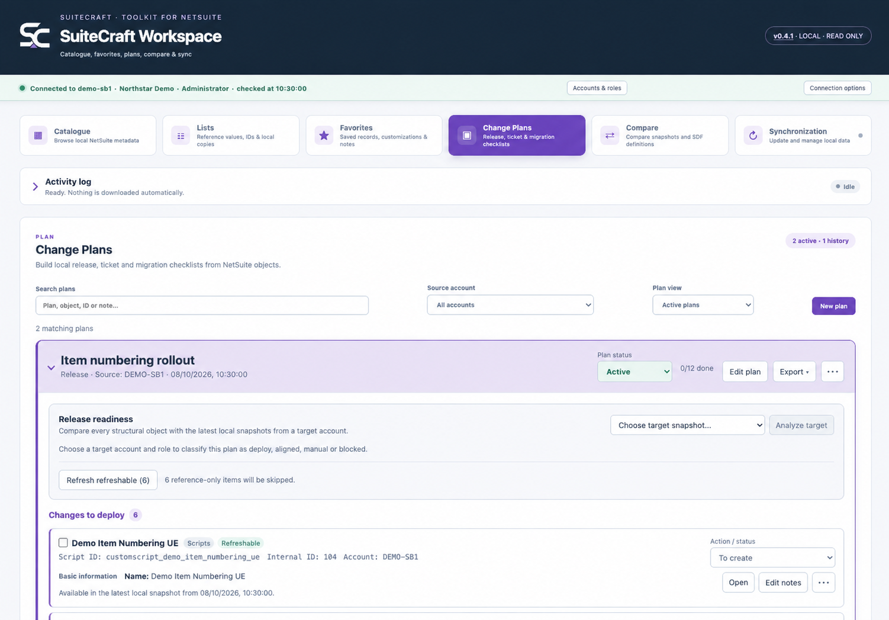
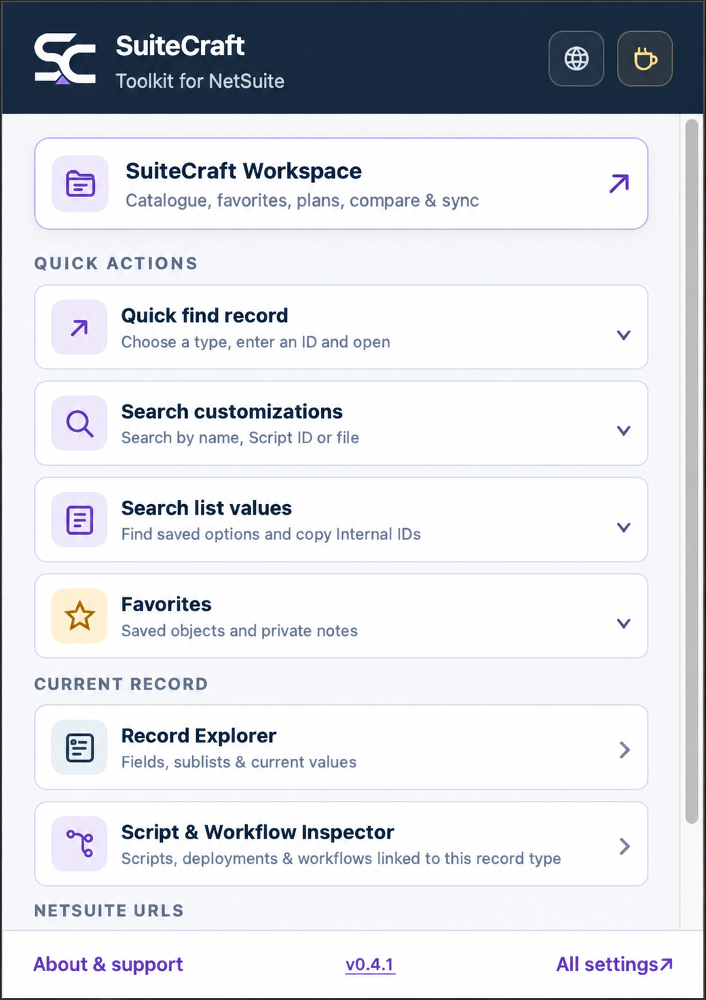

01 · DISCOVER
Customization Catalogue
Search the local catalogue and open the object you need.
 SuiteCraftToolkit for NetSuite
SuiteCraftToolkit for NetSuite
Built for people who work in NetSuite
SuiteCraft brings record inspection, customization discovery, local snapshots and comparison tools into one focused browser workspace.
Designed for Chrome and Brave · Runs locally in your browser
Latest beta · 0.4.1
HOVER TO EXPLORE
Move over a preview or focus it with the keyboard. Each short scene is rendered live with fictional data — no video download and no customer account content.
Search the local catalogue and open the object you need.
Open the current record and find a field in seconds.
Add a customization and turn it into release-ready work.
Hover a card to play · Focus or tap for touch and keyboard
SEE SUITECRAFT IN ACTION
Explore SuiteCraft through real product screens that show how each tool fits into everyday NetSuite work.

ONE PRACTICAL TOOLKIT
Focused tools for administrators, developers and consultants who want to understand an account faster and repeat fewer manual steps.
Search fields, custom records, lists, scripts and workflows from locally stored account snapshots.
Inspect body fields, sublists and current values, filter native and custom fields, and open synchronized field definitions.
See scripts, deployments and workflows linked to the current record type, with IDs, entry points and workflow activity.
See what was added, removed or changed between environments or points in time, down to practical properties and SDF XML.
Save frequently used NetSuite objects with private notes and find them quickly from the popup or Workspace.
Prepare releases with target readiness checks, item statuses, notes, links and Markdown, CSV or JSON exports.
Keep SuiteCraft shortcuts close to the record title and optionally wrap crowded NetSuite action bars across multiple rows.
Copy or switch between System and Debugger URL variants without rebuilding the address by hand.
Keep standard lists and custom record options close. Search values, copy Internal IDs and export local copies as CSV or Excel.
Find menu destinations with full paths, fields on the current form by label or field ID, and local Favorites, catalogue objects and list values. Use All or a focused scope, locate fields, copy IDs and open full results in Workspace.
Choose light or dark mode for Workspace and Settings, read illustrated feature descriptions and enable the tools you need. Embedded NetSuite tools keep their light appearance.
Choose a record type, enter an Internal ID, exact name or supported Script ID, and open the record in a new tab. Use the extension popup or the shortcut beside SuiteCraft Search, which carries your entered ID into the record finder.
Give local accounts and roles recognizable names and remove downloaded data for a chosen scope. Keep account identities, Favorites and Change Plans intact.
DESIGNED WITH CLIENT WORK IN MIND
SuiteCraft works through an already authenticated NetSuite browser tab. Catalogue snapshots, favorites and notes are stored locally in the browser profile and are not sent to a SuiteCraft backend.
Read the complete privacy policyNo SuiteCraft cloud accountYour work does not depend on a separate service.
On-demand synchronizationYou decide when account metadata is refreshed.
Portable local backupsExport and restore your settings and snapshots with versioned JSON backups.
Privacy-friendly website analytics. This marketing website uses Cloudflare Web Analytics for aggregate traffic and performance statistics. It does not use cookies or collect personal data. The analytics beacon is not included in the SuiteCraft browser extension.
WHAT’S NEW
SuiteCraft Search, clearer Change Plans and faster sync modes.
Released
Browse all versions and their detailed release notes.
PRIVATE BETA
SuiteCraft is under active development and has been submitted to the Chrome Web Store for review. Early access remains limited to a small testing group.
INDEPENDENTLY BUILT
I built SuiteCraft around the small frustrations that add up during everyday NetSuite work. My goal is to create focused tools that fit naturally into your workflow and stay out of the way until you need them.
SuiteCraft is an independent project, developed and maintained by Damian Krolikowski.